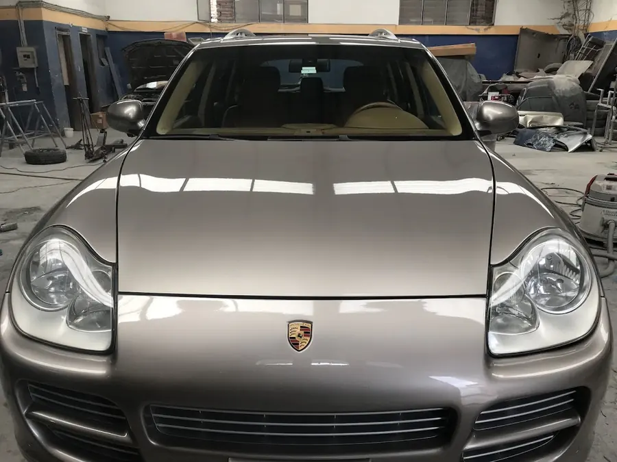
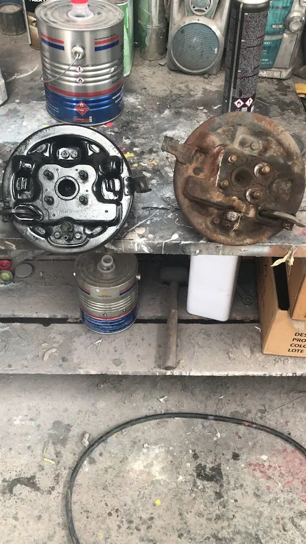

Reparación y pinturaProceso visual de antes y después.
Servicio principal
Reparamos vehículos chocados, rayones, abolladuras y piezas con pintura deteriorada. Trabajamos en Huachi Chico con un proceso claro: evaluación, alcance definido, reparación y entrega.
Enderezada y pintura automotriz
En FINECAR Bodyshop la enderezada y pintura automotriz es el servicio principal. Atendemos autos con golpes leves, vehículos chocados, piezas descuadradas, rayones profundos, pintura opaca y daños de carrocería qué necesitan una revisión antes de decidir si conviene reparar, pintar o reemplazar.
El primer paso puede ser por WhatsApp. Envía una foto general del carro, una foto cercana del daño y una foto lateral para ver profundidad y piezas afectadas. Con eso podemos orientarte sobre si el caso se puede cotizar inicialmente o si necesita inspección presencial en el taller.
Trabajamos enderezada de chasis y compactos cuando la reparación es viable, recuperación de guardachoques, puertas, capó, compuertas y paneles, además de pintura de piezas con igualación de color, brillo directo, barniz, tricapa, perlados y acabados mate. En pintura se puede ofrecer garantía de hasta 2 años según el trabajo realizado.
Si buscas un taller de pintura automotriz en Ambato, un taller de enderezada y pintura en Huachi Chico o una solucion para reparar un vehículo chocado, la mejor forma de empezar es con fotos claras y una explicacion sencilla de lo qué pasó.
Servicios de carrocería
Trabajos reales




Cotización